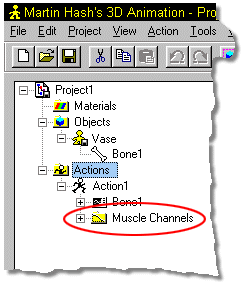

The CLEAR item in the Action menu will remove all motion off of the model.
When you save over the existing Action, of course all existing Muscle motion will
be lost.
The CLEAR item in the Action menu will remove all motion off of the model.
When you save over the existing Action, of course all existing Muscle motion will
be lost.
If for some reason, you wish to remove just the muscle motion from a character, delete the Muscle Channels folder under the action you wish to clear.

Related Topics:
About Muscle Mode
Creating Muscle Motions
Saving Muscle Actions
Using Poses
Using Dopesheets